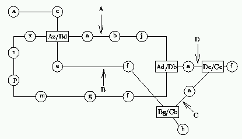

| Route Finding |
Many cities provide a comprehensive public transport system, often integrating bus routes, suburban commuter train services and underground railways. Routes on such systems can be categorised according to the stations or stops along them. We conventionally think of them as forming lines (where the vehicle shuttles from one end of the route to the other and returns), loops (where the two ends of the ``branch'' are the same and vehicles circle the system in both directions) and connections, where each end of the route connects with another route. Obviously all of these can be thought of as very similar, and can connect with each other at various points along their routes. Note that vehicles can travel in both directions along all routes, and that it is only possible to change between routes at connecting stations.
To simplify matters, each route is given a designation letter from the set `A' to `Z', and each station along a route will be designated by another letter from the set `a' to `z'. Connecting stations will have more than one designation. Thus an example could be:

A common problem in such systems is finding a route between two stations. Once this has been done we wish to find the ``best'' route, where ``best'' means ``shortest time''.
Write a program that will read in details of such a system and then will find the fastest routes between given pairs of stations. You can assume that the trip between stations always takes 1 unit of time and that changing between routes at a connecting station takes 3 units of time.
Input will consist of two parts. The first will consist of a description of a system, the second will consist of pairs of stations. The description will start with a number between 1 and 26 indicating how many routes there are in the system. This will be followed by that many lines, each describing a single route. Each line will start with the route identifier followed by a `:' followed by the stations along that route, in order. Connections will be indicated by an `=' sign followed by the complete alternative designation. All connections will be identified at least once, and if there are more than two lines meeting at a connection, some or of all the alternative designations may be identified together. That is, there may be sequences such as `...hc=Bg=Cc=Abd...'. If the route forms a loop then the last station will be the same as the first. This is the only situation in which station letters will be repeated. The next portion of the input file will consist of a sequence of lines each containing two stations written contiguously. The file will be terminated by a line consisting of a single #.
Output will consist of a series of lines, one for each pair of stations in the input. Each line will consist of the time for the fastest route joining the two stations, right justified in a field of width 3, followed by a colon and a space and the sequence of stations representing the shortest journey. Follow the example shown below. Note that there will always be only one fastest route for any given pair of stations and that the route must start and finish at the named stations (not at any synonyms thereof), hence the time for the route must include the time for any inter-station transfers.
The example input below refers to the diagram given above.
4 A:fgmpnxzabjd=Dbf D:b=Adac=Ccf B:acd=Azefg=Cbh C:bac AgAa AbBh BhDf #
5: Agfdjba 9: Abaz=Bdefgh 10: Bhg=Cbac=Dcf